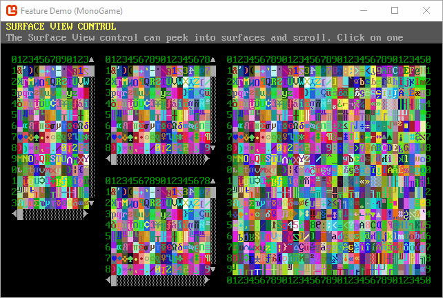

Welcome to SadConsole


SadConsole is .NET game library that provides an engine to emulate old-school console and command prompt style graphics. SadConsole is built in a generic way and doesn't do any rendering itself. A game engine or other rendering library is required to draw SadConsole games. There are host libraries for MonoGame and SFML. The ascii character set is represented in a sprite sheet, much like other modern ascii games such as Dwarf Fortress.
SadConsole is built on cross-platform .NET, and can run anywhere the graphical host library can. It uses the TheSadRogue.Primitives (NuGet, GitHub) library, which is a shared library with the amazing GoRogue 3 utility library.
Dependencies
SadConsole uses NuGet for its .NET dependencies.
Demo Project
The DemoProject shows how to use SadConsole in a multi-platform environment and demonstrates various things you can do with SadConsole.
Features
Here are some of the features SadConsole supports.
- Show any number of consoles of any size.
- Uses PNG graphic fonts supporting more than 256 characters.
- Fonts are simply sprite sheet tilesets tied to ascii codes, you can use full graphical tiles if you want.
- Full GUI system for interactive controls such as list boxes, buttons, and text fields.
- Keyboard and mouse support.
- Read ansi files from the good old DOS days.
- Entity support for drawing thousands of movable objects on the screen
- Animated consoles and instruction system to chain commands together.
- String encoding system for colors and effects while printing.
GUI library

String display and parsing

Scrolling

Entities

Views
